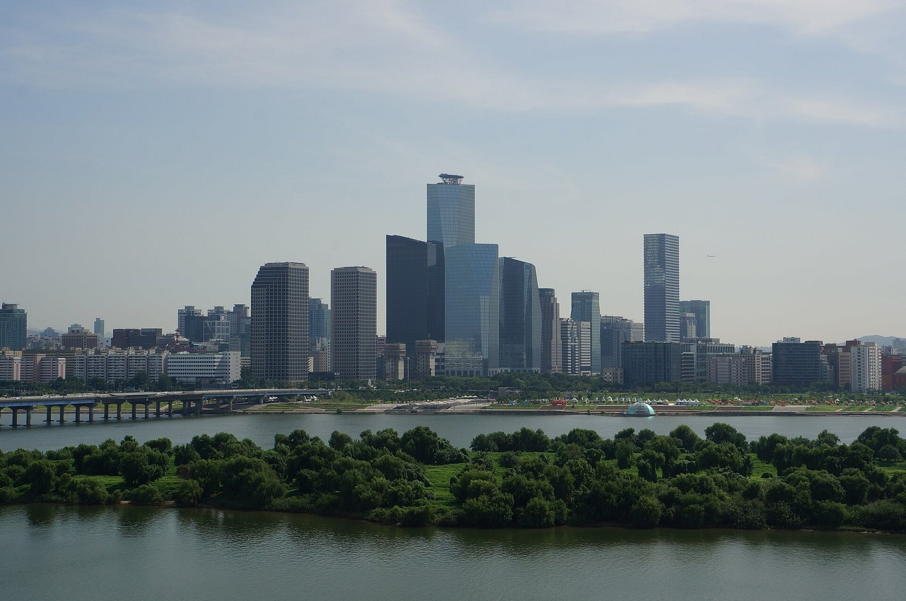
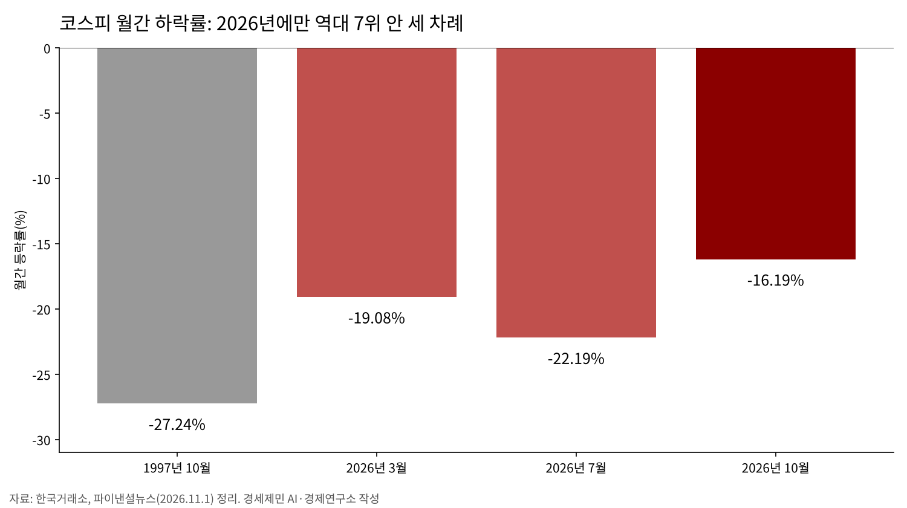
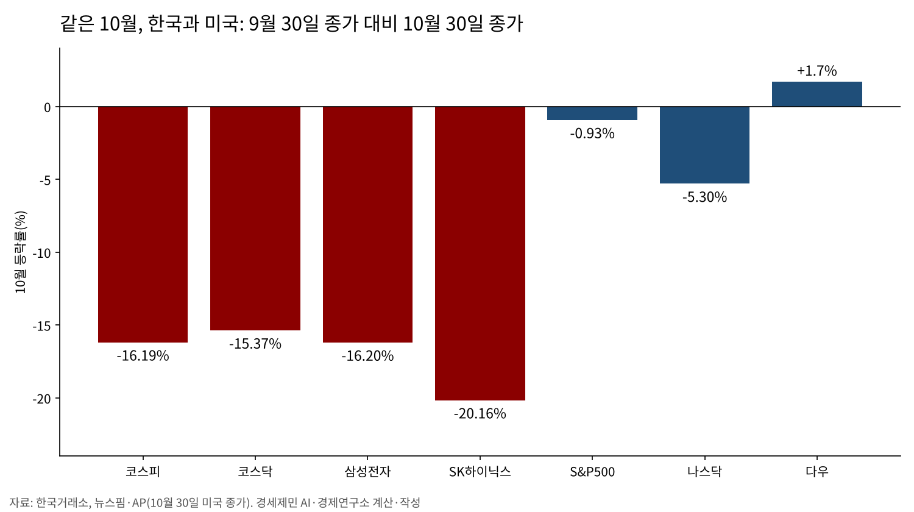
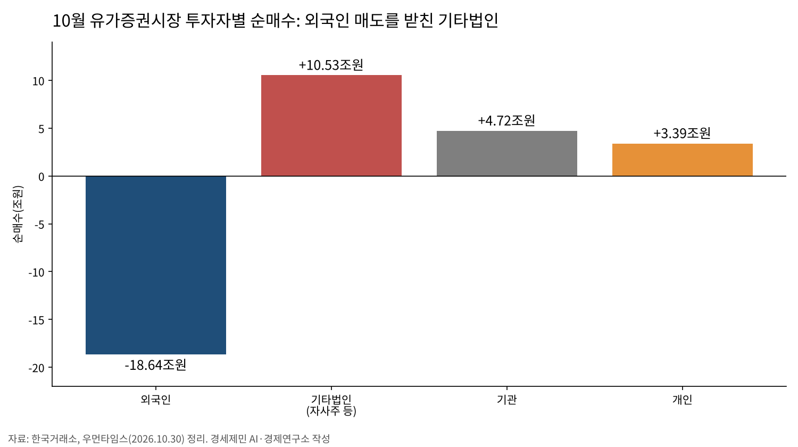
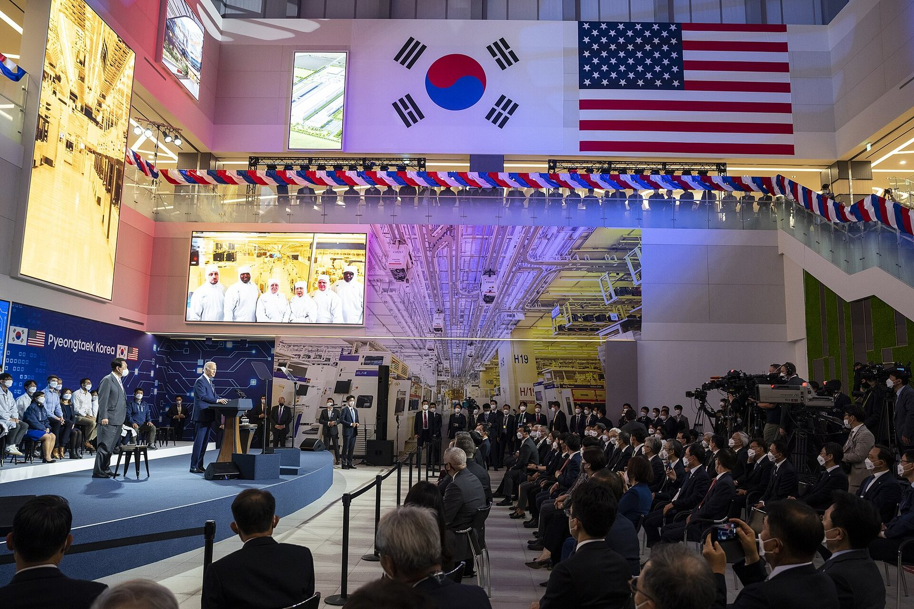
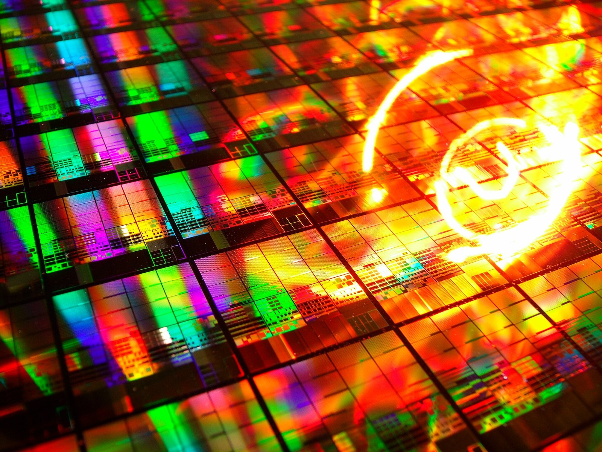
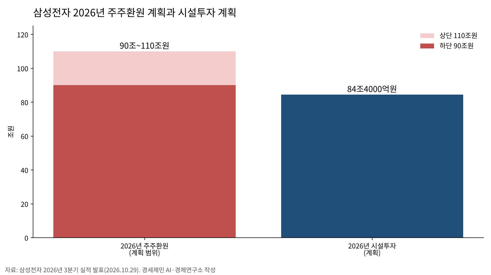
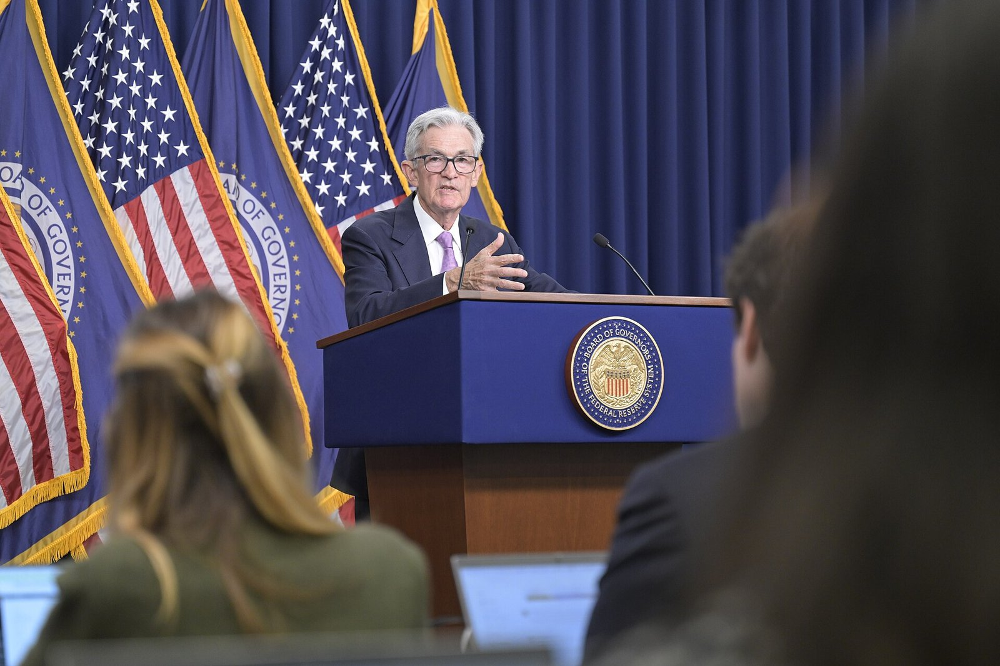
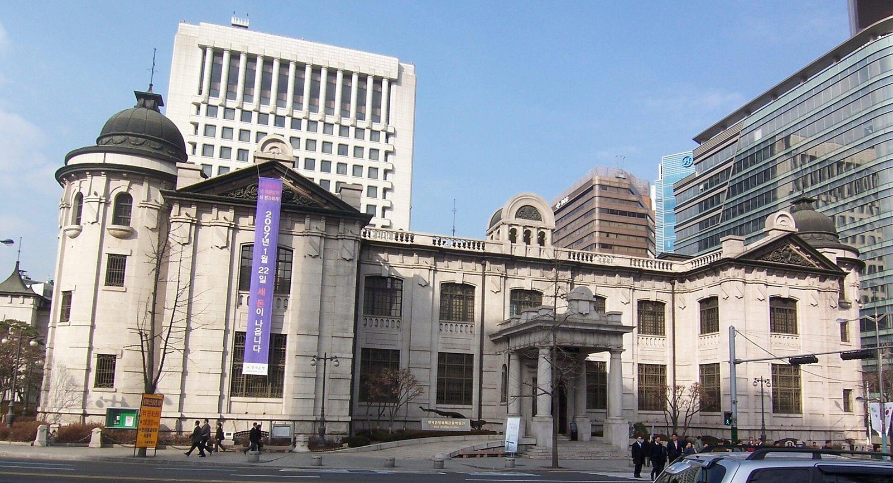

[10월 증시브리핑] 코스피 16.19% 하락, 받친 손은 기타법인
외국인 18조6437억원 순매도, 기타법인 10조5317억원 순매수
같은 달 미국 에스앤피(S&P)500 0.93% 하락, 코스피 낙폭은 그 17배
반도체 수출 259.4% 증가, 삼성전자 주가 16.20% 하락
코스피가 10월 한 달 동안 16.19% 떨어졌다. 9월 30일 6838.04에서 10월 30일 5730.74로 1107.30포인트 내렸다(한국거래소, 우먼타임스). 역대 월간 하락률 7위다. 올해 들어 3월(19.08% 하락, 역대 5위)과 7월(22.19% 하락, 역대 3위)에 이어 세 번째로 7위 안에 들었다(뉴시스).
같은 달 외국인은 유가증권시장에서 18조6437억원어치를 순매도했다. 그 물량을 기타법인이 10조5317억원, 기관이 4조7187억원, 개인이 3조3933억원어치 순매수해 받았다(한국거래소, 우먼타임스 정리). 외국인이 판 물량의 56.5%를 기타법인이 받았다(연구소 계산). 기타법인은 금융회사가 아닌 일반 법인이고, 상장사가 제 주식을 사들이는 자사주 매입이 여기에 잡힌다.
실물은 반대로 움직였다. 11월 1일 산업통상부 발표로 10월 수출은 1152억8000만달러(약 153조8181억원)로 1년 전보다 93.7% 늘었다. 반도체 수출은 564억4000만달러(약 75조3079억원)로 259.4% 늘었다(한국일보, 뉴스핌. 원화는 10월 30일 환율 1334.3원으로 연구소 계산). 반도체 수출 259.4% 증가와 삼성전자 주가 16.20% 하락은 같은 달의 숫자다.
수출이 역대 둘째로 많았던 달에 주가는 역대 일곱째로 크게 빠졌다(수출 순위는 한국일보, 뉴스핌). 누가 팔고 누가 받았는지, 기업이 번 돈은 어디로 가는지, 11월에 무엇을 볼지를 한국거래소 통계와 두 회사 공시로 짚는다.
미국발 인공지능 우려, 한국 낙폭은 미국의 17배

미국 증시도 10월에 흔들렸지만 낙폭은 크게 달랐다. 에스앤피(S&P, Standard & Poor's)500은 9월 30일 7651.54에서 10월 30일 7580.07로 0.93% 내렸다(AP 종가로 연구소 계산. 뉴스핌 집계는 0.94%). 나스닥은 5.30% 내렸고, 다우는 오히려 1.7% 올랐다(뉴스핌). 코스피 낙폭 16.19%는 S&P500 낙폭의 17.3배다(연구소 계산).
한국 반도체 두 종목은 지수보다 더 빠졌다. 삼성전자는 16.20%, SK하이닉스는 20.16% 떨어졌다(뉴시스, 우먼타임스). 코스닥도 855.91에서 724.38로 15.37% 내렸다(한국거래소, 연구소 계산).

시장이 꼽은 까닭은 넷이다. 미국 고금리가 길어질 수 있다는 걱정, 인공지능 투자가 돈을 벌어 줄지에 대한 의문, 중국 메모리 업체의 추격, 외국인 매도다(뉴시스 11월 1일). 걱정의 출발점은 미국 빅테크(Big Tech, 대형 정보기술 기업)였는데, 값은 한국 반도체가 더 크게 치렀다(연구소 판단).
변동성도 컸다. 선물값이 급하게 움직일 때 컴퓨터가 정해진 조건으로 내는 프로그램 매매 주문을 5분 멈추는 사이드카(Sidecar)가 여섯 번 걸렸다. 매도 사이드카는 13일, 15일, 30일, 매수 사이드카는 21일, 27일, 28일이다(뉴시스, 우먼타임스).
15일에는 코스피와 코스닥이 장중 8% 넘게 빠져 거래를 20분 멈추는 서킷브레이커(Circuit Breaker, 매매 일시정지)가 함께 걸렸다. 코스피는 7.57% 내린 5554.22, 코스닥은 7.65% 내린 760.82에 마감했다(SBS Biz, 스페셜타임스).

월말에는 미국 반도체가 또 무너졌다. 10월 30일(미국 시각) 인텔이 28.58% 떨어졌다(서울경제, 파이낸셜뉴스. 뉴스핌 집계는 29.68%). 필라델피아 반도체지수는 7.20%(서울경제, 파이낸셜뉴스, 뉴스핌), SK하이닉스 미국예탁증서(ADR, 미국 시장에서 거래되는 외국 주식 증서)는 7.95%(파이낸셜뉴스) 내렸다. 알파벳·아마존·인텔 실적 뒤 인공지능 투자 수익성 의문이 커졌고(뉴스핌, 파이낸셜뉴스), 인텔은 4분기 매출 전망이 나빴다(파이낸셜뉴스).
이 하락은 한국 장이 끝난 뒤에 나와 10월 코스피 등락률에는 들어가지 않았다. 11월 첫 거래일인 2일 한국 시장이 이 숫자를 처음 반영한다.
미국 기술주 걱정이 미국 지수보다 한국 지수에 더 크게 실린 데는 까닭이 있다. 코스피는 반도체 두 종목의 무게가 크고, 그 두 종목 주식의 절반 가까이를 외국인이 갖고 있다(10월 14일 삼성전자 46.18%, SK하이닉스 49.12%, 아시아투데이). 10월에는 미국 빅테크의 투자 계획이 흔들리자 한국 반도체에서 외국인 물량이 쏟아졌다(연구소 판단).
외국인이 판 자리, 받친 것은 기타법인
10월 지수는 외국인 매매와 같은 방향으로 움직였다. 파이낸셜뉴스가 한국거래소 자료로 셈한 10월 외국인 일별 순매수와 코스피 일간 수익률의 상관계수는 0.776, 개인은 -0.748이다. 상관계수는 두 숫자가 같이 움직이는 정도를 -1에서 1 사이로 나타낸 값이다. 외국인이 판 날 지수가 대체로 내렸고, 지수가 내린 날 개인은 대체로 샀다는 뜻이다. 기관은 -0.04로 방향이 없었다(파이낸셜뉴스 계산).
큰 하락일에 그 모습이 그대로 나왔다. 13일 코스피가 5.46% 내린 날 외국인은 4조5789억원어치를 팔았고(스페셜타임스, 파이낸셜뉴스. KB증권 집계는 5조1532억원) 개인은 2조원 넘게 샀다(파이낸셜뉴스 2조3170억원, KB증권 2조9096억원). 15일 7.57% 내린 날에도 외국인은 3조6000억원 넘게 팔았다(스페셜타임스 3조6463억원, 파이낸셜뉴스 3조7580억원).

외국인은 반도체 두 종목에서 지분을 크게 줄였다. 한국거래소 집계로 삼성전자 외국인 지분율은 연초 52.33%에서 10월 14일 46.18%로 6.15%포인트, SK하이닉스는 53.83%에서 49.12%로 4.71%포인트 내렸다(아시아투데이).
받침은 기타법인이었다. SK하이닉스는 8월 20일 시작한 40조43억원어치 자사주 매입을 10월 21일 마쳤다. 산 주식 2407만주는 모두 소각한다. 예정한 11월 19일보다 한 달가량 빨랐다(SBS Biz, SK하이닉스 뉴스룸).
삼성전자가 8월 21일 결의한 자사주 15조원은 임직원 보상용이다(머니투데이방송, 미디어워치). 미디어워치 집계로 10월 1일까지 14조1565억원어치를 사들여 한도까지 약 8435억원이 남았다. 삼성전자의 10월 2일 이후 매입은 많아야 기타법인 10월 순매수의 8.0%다(연구소 계산).
기타법인 10조5317억원 가운데 SK하이닉스 자사주가 얼마이고 다른 법인 매수가 얼마인지는 공개 통계로 가를 수 없다. SK하이닉스도 10월에 산 금액을 따로 밝히지 않았다. 지수를 받친 힘이 시장 수요인지 회사의 자기 매수인지 개인투자자는 알 수 없다는 뜻이다(연구소 판단).

빚을 내 산 개인은 값을 따로 치렀다. 증권사에서 돈을 빌려 주식을 사는 신용거래융자 잔고는 10월 12일 34조2887억원에서 21일 30조2710억원으로 4조177억원 줄었다(금융투자협회 자료, 아주경제 보도). 같은 자료로 9월 21일부터 10월 21일까지 미수금 반대매매는 5336억8200만원이었다.
반대매매는 외상으로 산 주식 대금(미수금)이나 신용융자 담보를 채우지 못한 계좌의 주식을 증권사가 강제로 파는 일이다. 5336억8200만원은 미수금 반대매매만 센 값이라 신용융자 반대매매는 들어 있지 않다. 지수를 떠받친 쪽은 자사주를 산 회사를 포함한 기타법인이었고, 손실 부담이 쏠린 쪽은 지수가 높던 10월 초중순에 산 개인과 빚을 내 산 개인이었다(연구소 판단).
사상 최대 실적, 그 몫은 어디로 가나

두 회사는 3분기에 사상 최대 실적을 냈다. SK하이닉스는 28일 매출 104조6155억원, 영업이익 83조3338억원을 발표했다. 회사가 밝힌 영업이익률(매출 가운데 영업이익 비중)은 80%다(SK하이닉스 뉴스룸). 이날 주가는 10.89% 오른 148만7000원이었다(아시아경제, 파이낸셜뉴스).
삼성전자는 29일 매출 195조3000억원, 영업이익 107조4000억원을 확정 발표했다. 반도체를 맡은 디에스(DS, Device Solutions)부문 영업이익이 106조5000억원으로 거의 전부를 벌었다(삼성전자 뉴스룸). 그러나 이날 주가는 4.13% 내린 23만2000원이었다(이투데이, 전자신문).
삼성전자는 3분기 현금배당 30조원(보통주 1주당 4601원)을 결의했다. 배당과 자사주 매입·소각으로 주주에게 이익을 돌려주는 2026년 전체 주주환원 규모는 90조~110조원으로 잡았다. 이미 집행·확정한 35조원을 뺀 55조~75조원의 실행 방안은 2027년 1월 말 이사회에서 정한다(삼성전자 뉴스룸). 이투데이(10월 29일)는 남은 환원 방안이 내년 1월 말에 정해진다는 점도 환원책을 기다리던 투자자의 기대를 약하게 했다고 전했다. 전자신문도 구체적인 정책이 확정되지 않아 실망 매물이 나왔다는 증권가 분석을 실었다.
SK하이닉스는 3분기 배당 14조원(1주당 2만원)과 자사주 매입 20조원을 결의했다. 1주당 배당 가운데 1만원은 일본 메모리 반도체 기업 키옥시아(Kioxia) 투자 성과를 나누는 특별배당이다. 자사주 20조원 가운데 10조원은 전량 소각하고, 나머지 약 10조원은 임직원 보상용이라 주주환원에 넣지 않았다(SK하이닉스 뉴스룸).

번 돈이 어디로 가는지 숫자를 나란히 놓으면 이렇다. 삼성전자의 2026년 연간 시설투자 계획은 84조4000억원이다(삼성전자 뉴스룸). 같은 해 주주환원 계획 90조~110조원은 시설투자의 1.07~1.30배다(연구소 계산). 공장과 장비에 쓰는 돈보다 주주에게 돌려주는 돈이 많다(연구소 판단).
배당이 누구에게 가는지도 어림할 수 있다. 두 회사의 3분기 배당은 모두 44조원이다. 10월 14일 외국인 지분율(삼성전자 46.18%, SK하이닉스 49.12%)을 곱하면 외국인 몫은 약 20조7000억원이다(연구소 계산). 배당 기준일 지분율과 우선주 지분율이 이와 다르고 세금을 떼기 전 금액이라 어림값이다.
10월 외국인이 한국 시장에서 판 금액은 18조6437억원이고, 두 회사에서 받을 3분기 배당은 약 20조7000억원이다. 외국인이 판 돈과 외국인이 받을 돈은 같은 달에 나온 숫자다. 배당은 기준일에 주식을 가진 쪽에 돌아가므로 10월 매도와는 따로 셈한다.
일하는 사람 몫도 일부는 셀 수 있다. 두 회사가 임직원 보상용으로 사들였거나 사들이기로 한 자사주는 삼성전자 15조원, SK하이닉스 약 10조원이다. 두 회사 3분기 배당 한 번(44조원)의 57% 수준이다(연구소 계산). 매입 기간이 다른 숫자라 견줌의 폭은 넓게 읽어야 한다. 보상 주식이 임원과 직원에게 어떻게 나뉘는지는 공시되지 않았다.
주주환원은 주가를 받치는 힘이다. 다만 배당의 절반 가까이는 외국인에게, 나머지도 지분을 많이 가진 쪽에 비례해 간다. 협력업체 노동자와 반도체 공장이 선 지역에 가는 몫은 공시 숫자만으로 셀 수 없다. 버는 것과 나누는 것은 다른 문제다(연구소 판단).
11월에 볼 날짜와 숫자

통화정책은 한국과 미국 모두 숨을 골랐다. 미국 연방준비제도(연준)는 9월 인상에 이어 10월 28일 기준금리를 연 3.75~4.00%로 동결했다. 투표권자 12명 가운데 리사 쿡 이사와 베스 해맥 클리블랜드 연방준비은행 총재는 0.25%포인트 인상을 주장했다(한국일보). 한국은행은 10월 22일 7명 만장일치로 기준금리를 연 3.00%로 동결했다. 7월과 8월 두 차례 올린 뒤 쉬어 갔다(경향신문).
미국 10년물 국채금리는 10월 23일 5.00%였다. 연준 연방공개시장위원회(FOMC, Federal Open Market Committee) 결정일인 28일 5.05%까지 올랐다가 29일 4.98%로 내렸다(연방준비제도 일별 금리 통계 H.15). 원달러 환율은 10월 30일 1334.3원이었다(한국경제).
11월 일정은 이렇다(이투데이 정리). 2일 한국거래소가 업종을 감안한 주가순자산비율(PBR, Price to Book Ratio)이 3년(6개 반기) 연속 코스피 하위 25%, 코스닥 하위 10%에 든 기업 명단을 처음 공개한다. 주가순자산비율은 주가를 1주당 장부상 순자산으로 나눈 값이다. 1배 밑이면 주가가 장부상 순자산보다 싸다는 뜻이다.
3일(미국 시각)에는 미국 중간선거, 6일에는 미국 10월 고용보고서, 10일에는 미국 10월 소비자물가 발표가 이어진다. 17일(미국 장 마감 뒤)에는 엔비디아가 3분기 실적을 낸다. 10월 지수를 흔든 인공지능 투자 걱정이 이어질지를 가를 숫자다. 26일에는 한국은행 금융통화위원회가 열린다.
수급에서는 세 숫자를 본다. 첫째, 외국인 순매수가 2~3거래일 이어지는가. 외국인은 28일 1조1520억원, 29일 766억원어치를 순매수했다가 30일 1조6170억원어치 순매도로 돌아섰다(아시아경제, 이투데이, 한국경제). 둘째, 삼성전자 외국인 지분율이 46% 안팎에서 멈추는가. 셋째, 기타법인 순매수가 다시 늘어나는가.
셋째가 가장 불확실하다. 삼성전자의 남은 환원은 1월 말에 정해진다. SK하이닉스가 새로 결의한 자사주 20조원의 매입 기간은 확인되지 않았다. 10월처럼 기타법인 매수가 지수를 받칠지는 두 회사의 매입 공시가 가른다(연구소 판단).
제언 — 국회·금융당국·지방정부·지방의회가 할 일

첫째, 국회와 금융위원회는 한국거래소 투자자별 매매 통계에서 「기타법인」 안의 자사주 매입을 따로 떼어 공개하도록 해야 한다. 지금은 자사주 매입과 일반 법인 매매가 한 칸에 섞인다. 개인투자자는 지수를 받친 힘이 시장 수요인지 회사의 자기 매수인지 가려 볼 수 없다.
둘째, 금융위원회와 금융투자협회는 반대매매와 신용융자 잔고를 연령대별·지역별로 매월 공개해야 한다. 한 달 사이 미수금 반대매매 5336억원이 누구에게 떨어졌는지 지금 통계로는 셀 수 없다. 신용융자 반대매매는 금액조차 따로 공개되지 않는다.
셋째, 국회는 대기업 사업보고서에 주주환원과 시설투자와 인건비를 한 표로 나란히 적게 하는 방안을 검토해야 한다. 번 돈이 주주와 설비와 일하는 사람에게 어떻게 갈렸는지 한눈에 보이게 하자는 제안이다. 수출이 93.7% 늘어난 달에 그 과실이 어디로 갔는지 묻는 일도 이 표에서 시작한다.
넷째, 지방의회는 금융복지상담센터 조례에 빚을 내 주식을 사는 빚투와 반대매매 상담을 넣고, 지방정부는 그 창구를 운영할 필요가 있다. 폭락장 손실은 지역 가계의 빚으로 남는다.
헤드라인 지수를 보는 일과 그 지수를 누가 받쳤는지 보는 일은 다른 결과로 이어진다.
참고문헌
- 강중모, 「외국인 팔 때 코스피 급락…개인은 하락장서 '줍줍'」, 파이낸셜뉴스, 2026년 11월 1일, https://www.fnnews.com/news/202611011825303488
- 이지민(뉴시스), 「코스피 한 달 만에 16% 빠졌다…변동성 다시 확대되나」, 파이낸셜뉴스 전재, 2026년 11월 1일, https://www.fnnews.com/news/202611011034109026
- 성민, 「10월 코스피 7000선서 5700선으로…멈췄던 사이드카 재발동」, 우먼타임스, 2026년 10월 30일, https://www.womentimes.co.kr/news/articleView.html?idxno=107474
- 전예현, 「10월 수출 1153억 달러, 두 달 연속 1100억 돌파… "11월 1조 달러 확실시"」, 한국일보, 2026년 11월 1일, https://www.hankookilbo.com/news/article/A2026110108520005142
- 김하영, 「10월 수출 1153억달러 '역대 2위'…반도체 564억달러 견인」, 뉴스핌, 2026년 11월 1일, https://www.newspim.com/news/view/20261031000112
- 신성우, 「코스피·코스닥, 7%대 폭락 마감…동반 서킷브레이커 '패닉'」, SBS Biz, 2026년 10월 15일, https://biz.sbs.co.kr/amp/article/20000340218
- 정시환, 「외국인, 10월 코스피서 17조8천345억원 순매도…지수 7.57% 하락」, 스페셜타임스, 2026년 10월 15일, https://www.specialtimes.co.kr/news/articleView.html?idxno=474533
- 김연지, 「코스피 3.48% 급락…삼성전자 3%·SK하이닉스 7%↓」, 한국경제, 2026년 10월 30일, https://www.hankyung.com/article/2026103064646
- 김민정, 「뉴욕증시, 인텔 30% 급락 속 하락…나스닥 2.86%↓」, 뉴스핌, 2026년 10월 31일, https://www.newspim.com/news/view/20261031000020
- AP, 「How major US stock indexes fared Wednesday 9/30/2026」, 라나시온(LA NACION) 전재, 2026년 9월 30일, https://www.lanacion.com.ar/usa/how-major-us-stock-indexes-fared-wednesday-9302026-nid30092026/
- 박종원, 「"AI 언제 돈 버나"... '인텔쇼크'에 탈탈 털린 美 기술주」, 파이낸셜뉴스, 2026년 11월 1일, https://www.fnnews.com/news/202611011820319033
- 윤경환, 「AI 투자 공포에 나스닥 2.9% ↓...인텔 29% 급락 [데일리국제금융]」, 서울경제, 2026년 10월 31일, https://www.sedaily.com/article/20108554
- 삼성전자 뉴스룸, 「삼성전자, 2026년 3분기 실적 발표」, 2026년 10월 29일, https://news.samsung.com/kr/%ec%82%bc%ec%84%b1%ec%a0%84%ec%9e%90-2026%eb%85%84-3%eb%b6%84%ea%b8%b0-%ec%8b%a4%ec%a0%81-%eb%b0%9c%ed%91%9c
- SK하이닉스 뉴스룸, 「SK하이닉스, 2026년 3분기 경영실적 발표」, 2026년 10월 28일, https://news.skhynix.co.kr/q3-2026-business-results/
- 박주연, 「삼전·하닉 비중 줄이는 외인…지분율 17년·4년 만 최저」, 아시아투데이, 2026년 10월 14일, https://www.asiatoday.co.kr/kn/view.php?key=20261014010004443
- 최윤선, 「"한 달 새 반대매매 5300억"…빚투 잔고도 고점 대비 4조 감소」, 아주경제, 2026년 10월 23일, https://www.ajunews.com/view/20261023145948356
- 이서호, 「삼성전자, 자사주 계획물량 모두 매입… 15조까지 300만주 더 살 듯」, 미디어워치, 2026년 10월 2일, https://www.mediawatch.kr/news/article.html?no=261255
- 안지혜, 「SK하닉, 40조 규모 자사주 매입 완료…예정보다 한 달 빨라」, SBS Biz, 2026년 10월 21일, https://biz.sbs.co.kr/amp/article/20000341347
- 김현빈, 「중간선거 엿새 앞 '숨 고르기'… 美 연준, 기준금리 동결」, 한국일보, 2026년 10월 29일, https://www.hankookilbo.com/news/article/A2026102905280002143
- 조미덥, 「[속보]한은 기준금리 연 3.0%로 동결···두 차례 인상 후 '숨고르기'」, 경향신문, 2026년 10월 22일, https://khan.co.kr/article/202610220950001
- 연방준비제도, 「H.15 Selected Interest Rates (Daily)」, 2026년 10월 30일 발표분, https://www.federalreserve.gov/releases/h15/
- 임하은, 「11월 증시도 쉴 틈 없다⋯美 중간선거·엔비디아·금통위 일정에 '주목'」, 이투데이, 2026년 10월 30일, https://www.etoday.co.kr/news/view/2642383
본문 수치 보조 출처
- 이민우, 「반도체주 급등에 코스피 6000대 마감…SK하이닉스 11%↑」, 아시아경제, 2026년 10월 28일, https://core.asiae.co.kr/article/2026102816203154547
- 정수천, 「코스피, 6000선 하루 만에 반납…삼성전자 4%대 하락」, 이투데이, 2026년 10월 29일, https://www.etoday.co.kr/news/view/2641883
- 김범근, 「[증시키워드] 삼성전자 '실적 발표 징크스' 4%↓·SK하이닉스 150만원 회복」, 이투데이, 2026년 10월 30일, https://www.etoday.co.kr/news/view/2642055
- 이상목, 「'107조' 번 삼전 떨어지고, '83조' 번 하닉 오르고…역대급 실적보다 '이것' 주가 갈랐다」, 전자신문, 2026년 10월 29일, https://www.etnews.com/20261029000455
- 김이슬, 「삼성전자, 국내 기업 역대 최대 '110조' 주주환원 결정(종합)」, 머니투데이방송, 2026년 8월 21일, https://news.mtn.co.kr/news-detail/2026082117561980782
- KB증권, 「매도 사이드카 코스피 -5%대 하락」(10월 13일 마감 수급), 2026년 10월 13일, https://kbthink.com/investment/today-pick/2610/261013-2.html
도표 출처
- [도표1] 경세제민 AI·경제 연구소 작성, 자료 한국거래소(뉴시스 정리, 파이낸셜뉴스 전재 2026년 11월 1일)
- [도표2] 경세제민 AI·경제 연구소 계산·작성, 자료 한국거래소, AP, 뉴스핌
- [도표3] 경세제민 AI·경제 연구소 작성, 자료 한국거래소(우먼타임스 2026년 10월 30일 정리)
- [도표4] 경세제민 AI·경제 연구소 작성, 자료 삼성전자 2026년 3분기 실적 발표(2026년 10월 29일)
[사진 출처]
- [사진1] heecheol890102, Yeouido_Han_River_Seoul_Bamseom_Pixabay_1602524.jpg, 위키미디어 공용, CC0, https://commons.wikimedia.org/wiki/File:Yeouido_Han_River_Seoul_Bamseom_Pixabay_1602524.jpg
- [사진2] Adam Schultz(미국 백악관), P20220909AS-1281, 위키미디어 공용, 퍼블릭 도메인, https://commons.wikimedia.org/wiki/File:P20220909AS-1281_(52517058506).jpg
- [사진3] Adam Schultz(미국 백악관), P20220520AS-1486, 위키미디어 공용, 퍼블릭 도메인, https://commons.wikimedia.org/wiki/File:P20220520AS-1486_(52196618609).jpg
- [사진4] ISCIX-Ex, Wafer300mm-LargeIC-testset.jpg, 위키미디어 공용, CC0, https://commons.wikimedia.org/wiki/File:Wafer300mm-LargeIC-testset.jpg
- [사진5] 미국 연방준비제도, Jerome Powell at Press Conference (DSC1894), 위키미디어 공용, 퍼블릭 도메인, https://commons.wikimedia.org/wiki/File:Jerome_Powell_at_Press_Conference_(DSC1894).jpg
- [사진6] Kaflan, Bank_of_Korea_20070103.jpg, 위키미디어 공용, 퍼블릭 도메인, https://commons.wikimedia.org/wiki/File:Bank_of_Korea_20070103.jpg
© 경세제민 AI·경제 연구소. 인용할 때는 출처를 밝혀 주십시오.